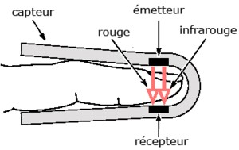

L'oxymetrie de pouls : la saturation pulsee en oxygene : SpO2
DefinitionL'oxymetrie de pouls ou saturation en oxygene est une methode de mesure non invasive de la saturation en oxygene de l'hemoglobine au niveau des capillaires sanguins, on parle de saturation pulsee en oxygene : SpO2.
La SpO2 est tres proche de la SaO2, qui est la saturation arterielle en oxygene.
Cadre legislatif- Soin infirmier sur rele propre : art. R.4311-5 decret 2004-802 du 29/07/2004.
Les hematies ou globules rouges sont composees d'environ 33 % d'hemoglobine.
Chaque molecule d'hemoglobine porte quatre atomes de fer qui peuvent chacun se lier a une molecule d'oxygene.
Lorsque l'oxygene se lie au fer, le globule rouge se charge en oxygene et prend une couleur rouge vif. L'hemoglobine oxygenee s'appelle, l'oxyhemoglobine.
Lorsque l'oxygene est distribue aux tissus, le globule rouge est quasi decharge en oxygene. L'hemoglobine desoxygenee s'appelle, la deoxyhemoglobine.
FonctionnementLe principe de fonctionnement des appareils de mesure repose sur l’emission de deux lumieres (rouge et infrarouge), et de la mesure de leur absorption par le flux pulsatile du sang :
- L'oxyhemoglobine absorbe plus de lumiere infrarouge et laisse passer plus de lumiere rouge.
- La deoxyhemoglobine absorbe plus de lumiere rouge et laisse passer plus de lumiere infrarouge.
La partie non absorbee est recueillie par le capteur photoelectrique et analysee. L’analyse est effectuee suivant la valeur d'absorption de l’oxyhemoglobine et de la deoxyhemoglobine.

Interpretation du resultat
L'oxymetrie repose donc sur la mesure de l'absorption lumineuse de l'hemoglobine au niveau des capillaires sanguins et plus precisement sur le taux d'oxyhemoglobine et de deoxyhemoglobine de chaque globule rouge :
- Une SpO2 de 98 % signifie que chaque globule rouge est charge a 98% d'oxyhemoglobine et de 2% de deoxyhemoglobine.
- Une SpO2 de 98 % ne signifie pas 98% des globules rouges sont charges en oxygene.
L'oxymetrie de pouls permet donc de mesurer la proportion d'hemoglobine totale combinee a l'oxygene.
Le resultat affiche reflete les 3 a 6 dernieres secondes de saturation. Il est mis a jours toutes les demi-secondes.
Indications
- Surveillance de la fonction respiratoire.
- Surveillance du pouls et de la perfusion peripherique.
Materiel
- Appareil de mesure.
- Ceble.
- Capteurs :
- Doigtier.
- Autocollant.
Realisation du soin
- Verifier l'integrite du capteur, du ceble.
- Placer le capteur :
- Extremite des doigts ou des orteils.
- Lobe de l'oreille.
- Nez.
- Plante ou dos des pieds chez l'enfant.
- Regler les alarmes.
Complications : limites de la mesure
- Anomalie voire absence de detection : pouls faible ou irregulier.
- Compression du membre : ne pas mettre le capteur au bras portant le brassard a tension.
- Mauvais positionnement du capteur.
- Hypothermie.
- Frisson.
- Hypotension arterielle.
- Vasoconstriction.
- Troubles du rythme.
- Anemie car hematocrite bas.
- Agitation du patient.
- Hemoglobine anormale :
- Carboxyhemoglobine : association de monoxyde de carbone et de l'hemoglobine : intoxication. La carboxyhemoglobine est consideree comme de l'oxyhemoglobine par le capteur, ce qui fait une surestimation de la saturation.
- Colorants sur les ongles.